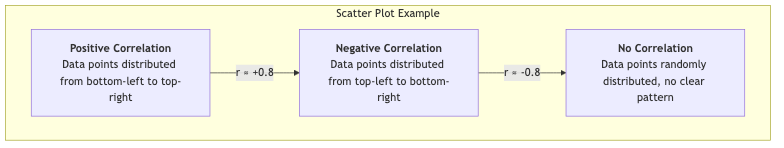

相関研究¶
科学的探求の旅において、私たちは「物事がどのような状態にあるか」（記述的研究）を知るだけでなく、物事同士がどのように結びついているかを理解したいという強い願望を持っています。相関研究（Correlational Research）はまさにそのような研究パラダイムであり、2つ以上の変数の間に関係性があるかどうか、そしてその強さと方向性を探索することを目的としています。この研究が答える中心的な質問は、「Aが変化するとき、Bも体系的に変化するのか？」ということです。
相関研究は、実験的手法ではない定量的研究方法です。研究者は実験のように変数を操作せず、既存の変数を測定し、統計的手法を用いてそれらの関係性を分析します。例えば、研究者が学生たちの「1日あたりの学習時間」と「試験の点数」を測定し、それらの間に関係があるかを調べる場合があります。このような研究は心理学、社会学、教育学、市場調査など多くの分野で重要な役割を果たしています。
相関の基本概念の理解¶
相関研究を理解するには、いくつかの基本的な概念を押さえる必要があります：
- 相関（Correlation）：2つ以上の変数が一緒に変化する傾向を指します。ある変数の値が変化すると、別の変数の値も予測可能な方法で変化する傾向があります。
- 相関係数（Correlation Coefficient）：-1.0 から +1.0 の範囲の統計値（通常はrで表され）で、相関の強さと方向性を数値的に表します。
- 方向性：
- 正の相関（Positive Correlation）：r > 0。2つの変数が同じ方向に変化します。一方が増加すると、もう一方も増加する傾向があります。例えば、身長と体重。
- 負の相関（Negative Correlation）：r < 0。2つの変数が逆方向に変化します。一方が増加すると、もう一方は減少する傾向があります。例えば、商品の価格と需要。
- 強さ：
- 相関係数の絶対値が1に近いほど関係性は強いです。r = +1.0 または -1.0 は完全な線形相関を示します。
- 相関係数が0に近いほど関係性は弱いです。r = 0 は2つの変数の間に線形関係がないことを示します。
- 方向性：
相関の可視化：散布図¶
散布図は、2つの変数の関係性を視覚的に確認するための最適なツールです。グラフ上のデータ点の分布パターンを観察することで、相関の方向性や強さを直感的に判断できます。
<!--
<!--

「相関は因果を意味しない」：最も重要な警告¶
相関研究を理解する上で常に念頭に置かなければならない黄金律です。2つの変数の間に強い相関が見られても、それだけで一方の変数が「もう一方の変数を引き起こす」と結論付けることは絶対にできません。これには主に2つの理由があります：
-
第3変数問題（Third-Variable Problem）：測定されていない隠れた第3の変数が、観測された2つの変数に同時に影響を及ぼし、見かけ上の関係性を作り出している可能性があります。古典的な例として、アイスクリームの販売数と溺死事故の件数の間には強い正の相関があります。しかし、アイスクリームを食べることが溺死を引き起こすとは言えません。真の第3変数は「暑い天候」であり、これは人々がアイスクリームを食べたり泳いだりする傾向を高め、両方の数値を同時に増加させます。
-
方向性問題（Directionality Problem）：たとえ2つの変数の間に因果関係が実際に存在したとしても、相関研究ではどちらが原因でどちらが結果であるかを判断することはできません。例えば、自尊感情と学業成績の間に正の相関があることが分かっても、高い自尊感情が学業成績を高めるのか、それとも優れた学業成績が学生の自尊感情を高めるのかは分かりません。相関研究ではこの質問に答えることはできません。
相関研究の実施方法¶
-
研究課題と変数の定義 どの2つ（またはそれ以上）の変数の関係性を探るかを明確に定義します。例えば、「従業員の職務満足度と職務パフォーマンスの間には関係があるか？」
-
変数の操作化と測定 各変数に対して具体的な測定方法を設計します。例えば、「職務満足度スケール」などの確立された尺度を用いて満足度を測定し、「年間パフォーマンス評価スコア」でパフォーマンスを測定します。
-
サンプリングとデータ収集 対象母集団から代表的なサンプルを選定し、サンプル内の各個人についてすべての関連変数を同時に測定します。
-
データ分析と解釈 統計ソフトウェアを用いて変数間の相関係数（例えばピアソンの積率相関係数）を計算し、散布図を作成します。相関係数の値と有意水準に基づき、変数間に統計的に有意な相関があるかどうかを判断し、その方向性と強さを記述します。
-
慎重な結論の導出 結果を報告する際には、表現に極めて注意し、「AはBに関連している」と述べることはあっても、「AがBを引き起こす」と述べてはいけません。同時に、可能な第3変数や異なる方向性の説明を積極的に検討します。
実際の応用例¶
事例1：教育心理学研究
- シナリオ：教育研究者が、学生の宿題提出率が最終試験の点数と関係しているかどうかを知りたいとします。
- 応用：彼は1つのクラスに所属するすべての学生の学期中の宿題提出率（パーセンテージ）と最終試験の点数を収集しました。相関係数を計算した結果、両者の間に中程度の正の相関（r = +0.55）があることを発見しました。彼は、宿題提出率が高い学生は傾向として最終試験の点数も高いと結論づけることができます。しかし、宿題を提出すること自体が高得点を「引き起こす」とは言えません（おそらく「学習意欲」が両者に影響を与える第3変数である可能性があります）。
事例2：公衆衛生研究
- シナリオ：疫学者が喫煙と肺がんの関係を研究したいとします。
- 応用：この問題を実験によって研究することは不可能（つまり、人々に喫煙を強制することはできない）ため、大規模な相関研究が用いられました。何十年にもわたる喫煙習慣（1日あたりの喫煙本数）と健康状態の調査を通じて、両者の間に非常に強い正の相関があることが判明しました。この結果だけでは因果関係を100%確立することはできませんが、生物学的証拠などの他の証拠と組み合わせることで、両者の因果関係を非常に強く裏付けることができます。
事例3：マーケティング分析
- シナリオ：企業が、自社のSNS広告費と製品販売数の関係を知りたいとします。
- 応用：企業は過去24か月間のデータを分析し、一方を月ごとの広告費、もう一方をその月のオンライン販売数としました。両者の間に強い正の相関があることを発見しました。これは広告費が多い月ほど販売数も多かったことを示しています。この発見は今後の予算配分の参考になりますが、第3変数（例えば季節的なプロモーションが広告費と販売数の両方を同時に増加させる可能性がある）にも注意する必要があります。
相関研究の長所と限界¶
主な長所
- 予測価値：2つの変数が強く相関している場合、一方の変数の値を使ってもう一方の変数の値を予測することができます。
- 操作できない変数の研究：倫理的または現実的な理由から実験によって操作できない変数（例えば性格特性、家庭環境、疾患など）についても研究可能です。このような変数については、相関研究が唯一の実行可能な調査方法です。
- 探索的：実験的研究のための初期段階的な探査として機能し、さらなる詳細な研究に値する潜在的な因果関係を特定するのに役立ちます。
潜在的な限界
- 因果関係を確立できない：これが最も基本的かつ中心的な限界です。
- 誤解されやすい：メディアや一般の人々はしばしば相関を因果関係と誤解し、誤った情報を広めてしまうことがあります。
- 線形関係のみを明らかにする：標準的な相関係数は線形関係のみを測定できます。2つの変数の間に非線形の関係（例えばU字カーブ）がある場合、相関係数は非常に低くなる可能性があり、実際には強い関係性が隠れているにもかかわらず見逃されることがあります。
拡張と関連概念¶
- 記述的研究：相関研究の基礎であり、変数間の関係性を研究するにはまず変数を記述できる必要があります。
- 実験的研究：相関研究が興味深い関係性を発見した後には、背後にある因果メカニズムを検証するために厳密な実験的研究を行うことができます。
- 回帰分析：相関研究の拡張・高度化された手法です。複数の独立変数がある場合、回帰分析は従属変数との関係性を明らかにするだけでなく、それぞれの独立変数の相対的な重要度や独自の予測力を分析することもできます。
参考文献：相関研究の統計的基盤はフランシス・ゴールトンとカール・ピアソンによって築かれました。ピアソンの積率相関係数は今日でも広く使用されている統計指標の一つです。心理学や社会科学の研究方法に関する基本的な教科書には、相関研究と因果関係の区別について詳細な記述があります。